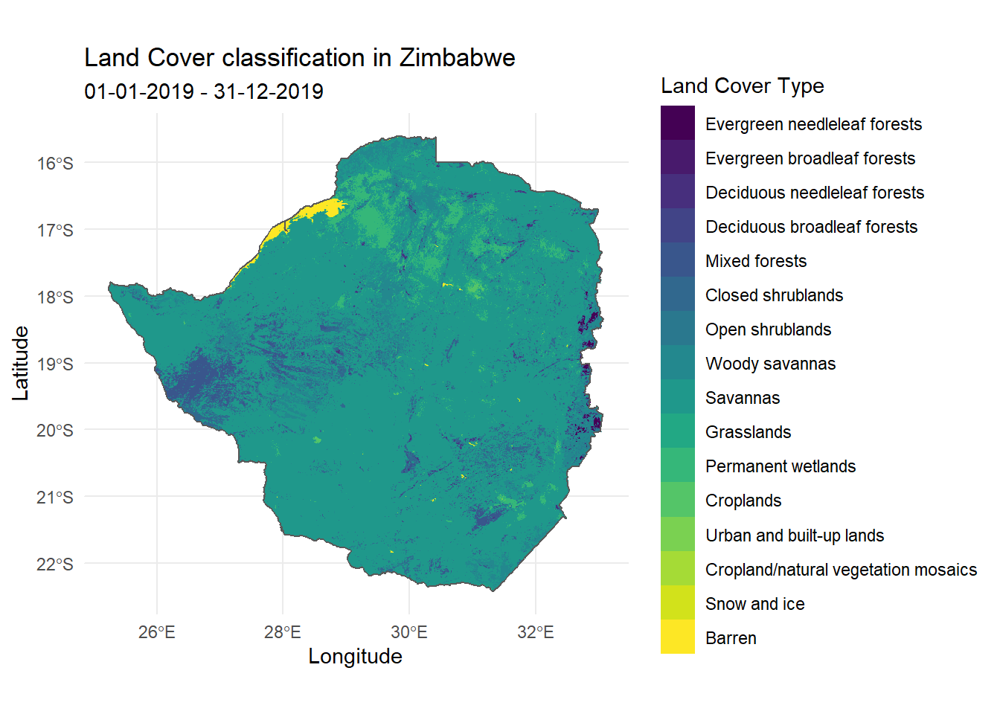

Land Cover
MODIS (Moderate Resolution Imaging Spectroradiometer)
MODIS is an instrument aboard the Terra and Aqua satellites, which orbits the entire Earth every 1-2 days, acquiring data at different spatial resolutions. The data acquired by MODIS describes features of the land, oceans and the atmosphere. A complete list of MODIS data products can be found on the MODIS website.
Downloading Land Cover data using MODIStsp
MODIStsp an acronym for ‘MODIS Time Series Processing’, is an R-package for downloading and preprocessing time series of raster data from MODIS data products. This tutorial will focus on downloading and visualising land cover data, but the same process can be followed with other MODIS data products as well.
Installing MODIStsp
The MODIStsp package can be simply downloaded from CRAN as follows
install.packages("MODIStsp")Identifying the MODIS data product
The first step of downloading data is to identify which MODIS data product to use.
This tutorial will use the Land Cover Products, which uses different classification schemes to identify types of land cover. The primary land cover scheme identifies 17 classes defined by the International Geosphere-Biosphere Programme (IGBP) as detailed in their user guide.This product contains annually averaged data, collected bi-annually allowing for hemispheric differences in the growing seasons, and enabling the product to capture two growth cycles if necessary.
The product IDs for each of these products can also be found on the data product page.
This tutorial will use the ‘Land Cover Type Yearly L3 Global 500m’ product with the product IDs MCD12Q1 (Combined Aqua and Terra Product ID)
Retreiving MODIS layers for a product
The product layers (original MODIS layers, quality layers and spectral indexes) available for a given product can be retreived using the following function.
library(MODIStsp)
MODIStsp_get_prodlayers("MCD12Q1")## $prodname
## [1] "LandCover_Type_Yearly_500m (MCD12Q1)"
##
## $bandnames
## [1] "LC1" "LC2" "LC3"
## [4] "LC4" "LC5" "LC_Prop1"
## [7] "LC_Prop2" "LC_Prop3" "LC_Prop1_Assessment"
## [10] "LC_Prop2_Assessment" "LC_Prop3_Assessment" "LC_QC"
## [13] "LC_LW"
##
## $bandfullnames
## [1] "Land Cover Type 1 (IGBP)*"
## [2] "Land Cover Type 2 (UMD)*"
## [3] "Land Cover Type 3 (LAI/fPAR)*"
## [4] "Land Cover Type 4 (NPP/BGC)*"
## [5] "Land Cover Type 5: Annual Plant Functional Types classification"
## [6] "FAO-Land Cover Classification System 1 (LCCS1) land cover layer"
## [7] "FAO-LCCS2 land use layer"
## [8] "FAO-LCCS3 surface hydrology layer"
## [9] "LCCS1 land cover layer confidence"
## [10] "LCCS2 land use layer confidence"
## [11] "LCCS3 surface hydrology layer confidence"
## [12] "Land Cover QC"
## [13] "Binary land/water mask derived from MOD44W"
##
## $quality_bandnames
## NULL
##
## $quality_fullnames
## NULL
##
## $indexes_bandnames
## NULL
##
## $indexes_fullnames
## NULLNote how the $bandfullnames define each of the $bandnames.
The MODIStsp() function
MODItsp() is the main function of the MODIStsp package, and allows us to download MODIS data products. While this is a very comprehensive function and we only a very few of its arguments in this tutorial, the entire list of arguments can be found in the MODItsp documentation.
The MODIStsp() function provides two ways of downloading data; through a GUI (interactive) or through an R script (non-interactive). This tutorial will focus on the non-interactive execution.
Downloading IGBP land cover classification data
To download the IGBP land cover classification data in Zimbabwe, first we download the boundary of Zimbabwe with the geoboundaries() function from the rgeoboundaries package and save it on our computer.
# install.packages(c("rgeoboundaries", "sf"))
library(rgeoboundaries)
library(sf)
# Downloading the country boundary of Zimbabwe
mongolia_boundary <- geoboundaries("Zimbabwe")
# Defining filepath to save downloaded spatial file
spatial_filepath <- "LandCoverData/zimbabwe.shp"
# Saving downloaded spatial file on to our computer
st_write(zimbabwe_boundary, paste0(spatial_filepath))Then we use the MODIStsp() function to download the IGBP land cover classification data.
To download data in Zimbabwe, we use the boundary of Zimbabwe we downloaded. So in the MODIStsp() function we set the spatmeth argument as “file” and set the spafile argument as the path of the map we saved.
Since IGBP land cover classification data is provided annually and dated on the 1st of January each year, the start-date and end_date arguments should contain the 1st of January of each year for which we want the data to be downloaded.
can be categorised as spatio-temporal data, the start-date and end_date arguments define the period for which we want the data to be downloaded. Here we use the same date for both the start and end date since we want to download the data for a single date.
Note that this tutorial uses a test username and password. The user and password arguments should be the username and password corresponding to your earthdata credentials.
library(MODIStsp)
MODIStsp(gui = FALSE,
out_folder = "LandCoverData",
out_folder_mod = "LandCoverData",
selprod = "LandCover_Type_Yearly_500m (MCD12Q1)",
bandsel = "LC1",
user = "mstp_test" ,
password = "MSTP_test_01",
start_date = "2019.01.01",
end_date = "2019.12.31",
verbose = FALSE,
spatmeth = "file",
spafile = spatial_filepath,
out_format = "GTiff")Understanding the downloaded data
The downloaded files are saved in subfolders within the defined output folder.
A separate subfolder is created for each processed original MODIS layer, Quality Indicator or Spectral Index with an image for each processed date. The images will be placed in the following folder structure and named using the following naming convention.
<defined_out_folder>/<shape_file_name>/<product_name>/<layer_name>/<prodcode>_<layername>_<YYYY>_<day_of_year>.<extension>
Visualising land cover in Zimbabwe
The following example uses the geom_raster() function from the ggplot2 package to visualise the downloaded IGBP land cover classification in Zimbabwe
# install.packages(c("rgeoboundaries", "sf", "raster", "here", "ggplot2", "viridis"))
library(rgeoboundaries)
library(sf)
library(raster)
library(here)
library(ggplot2)
library(viridis)
library(dplyr)
# Downloading the boundary of Zimbabwe
zimbabwe_boundary <- geoboundaries("Zimbabwe")
# Reading in the downloaded landcover raster data, transforming, and cropping it
IGBP_raster <- raster(here::here("LandCoverData/zimbabwe/LandCover_Type_Yearly_500m_v6/LC1/MCD12Q1_LC1_2019_001.tif"))
IGBP_raster <- projectRaster(IGBP_raster, crs = "+proj=longlat +ellps=WGS84 +datum=WGS84 +no_defs")
IGBP_raster <- raster::mask(IGBP_raster, as_Spatial(zimbabwe_boundary))
# Converting the raster object into a dataframe and converting the IGBP classification into a factor
IGBP_df <- as.data.frame(IGBP_raster, xy = TRUE, na.rm = TRUE) %>%
mutate(MCD12Q1_LC1_2019_001 = as.factor(round(MCD12Q1_LC1_2019_001)))
rownames(IGBP_df) <- c()
# Renaming IGBP classification levels
levels(IGBP_df$MCD12Q1_LC1_2019_001) <- c( "Evergreen needleleaf forests",
"Evergreen broadleaf forests",
"Deciduous needleleaf forests",
"Deciduous broadleaf forests",
"Mixed forests",
"Closed shrublands",
"Open shrublands",
"Woody savannas",
"Savannas",
"Grasslands",
"Permanent wetlands",
"Croplands",
"Urban and built-up lands",
"Cropland/natural vegetation mosaics",
"Snow and ice",
"Barren",
"Water bodies")
# Visualising using ggplot2
ggplot() +
geom_raster(data = IGBP_df,
aes(x = x, y = y, fill = MCD12Q1_LC1_2019_001)) +
geom_sf(data = zimbabwe_boundary, inherit.aes = FALSE, fill = NA) +
scale_fill_viridis(name = "Land Cover Type", discrete = TRUE) +
labs(title = "Land Cover classification in Zimbabwe",
subtitle = "01-01-2019 - 31-12-2019",
x = "Longitude",
y = "Latitude")
Examples
The following are complete examples on downloading and visualising IGBP land cover classification data in Zimbabwe
Downloading IGBP land cover classification data using the MODIStsp package
# install.packages(c("MODIStsp", "rgeoboundaries", "sf"))
library(MODIStsp)
library(rgeoboundaries)
library(sf)
# Downloading the country boundary of Zimbabwe
mongolia_boundary <- geoboundaries("Zimbabwe")
# Defining filepath to save downloaded spatial file
spatial_filepath <- "LandCoverData/zimbabwe.shp"
# Saving downloaded spatial file on to our computer
st_write(zimbabwe_boundary, paste0(spatial_filepath))
# Downloading data
MODIStsp(gui = FALSE,
out_folder = "LandCoverData",
out_folder_mod = "LandCoverData",
selprod = "LandCover_Type_Yearly_500m (MCD12Q1)",
bandsel = "LC1",
user = "mstp_test" ,
password = "MSTP_test_01",
start_date = "2019.01.01",
end_date = "2019.12.31",
verbose = FALSE,
spatmeth = "file",
spafile = spatial_filepath,
out_format = "GTiff")Visualising land cover in Zimbabwe using ggplot2
# install.packages(c("sf", "raster", "here", "ggplot2", "viridis", "rgeoboundaries"))
library(sf)
library(raster)
library(here)
library(ggplot2)
library(viridis)
library(rgeoboundaries)
# Downloading the boundary of Zimbabwe
zimbabwe_boundary <- geoboundaries("Zimbabwe")
# Reading in the downloaded landcover raster data, transforming, and cropping it
IGBP_raster <- raster(here::here("LandCoverData/zimbabwe/LandCover_Type_Yearly_500m_v6/LC1/MCD12Q1_LC1_2019_001.tif"))
IGBP_raster <- projectRaster(IGBP_raster, crs = "+proj=longlat +ellps=WGS84 +datum=WGS84 +no_defs")
IGBP_raster <- raster::mask(IGBP_raster, as_Spatial(zimbabwe_boundary))
# Converting the raster object into a dataframe and converting the IGBP classification into a factor
IGBP_df <- as.data.frame(IGBP_raster, xy = TRUE, na.rm = TRUE) %>%
mutate(MCD12Q1_LC1_2019_001 = as.factor(round(MCD12Q1_LC1_2019_001)))
rownames(IGBP_df) <- c()
# Renaming IGBP classification levels
levels(IGBP_df$MCD12Q1_LC1_2019_001) <- c( "Evergreen needleleaf forests",
"Evergreen broadleaf forests",
"Deciduous needleleaf forests",
"Deciduous broadleaf forests",
"Mixed forests",
"Closed shrublands",
"Open shrublands",
"Woody savannas",
"Savannas",
"Grasslands",
"Permanent wetlands",
"Croplands",
"Urban and built-up lands",
"Cropland/natural vegetation mosaics",
"Snow and ice",
"Barren",
"Water bodies")
# Visualising using ggplot2
ggplot() +
geom_raster(data = IGBP_df,
aes(x = x, y = y, fill = MCD12Q1_LC1_2019_001)) +
geom_sf(data = zimbabwe_boundary, inherit.aes = FALSE, fill = NA) +
scale_fill_viridis(name = "Land Cover Type", discrete = TRUE) +
labs(title = "Land Cover classification in Zimbabwe",
subtitle = "01-01-2019 - 31-12-2019",
x = "Longitude",
y = "Latitude")
References
MODISwebsite: https://modis.gsfc.nasa.gov/MODIStspvignette: https://cran.r-project.org/web/packages/MODIStsp/vignettes/MODIStsp.htmlMODIStsp land coverdata product page: https://modis.gsfc.nasa.gov/data/dataprod/mod12.php